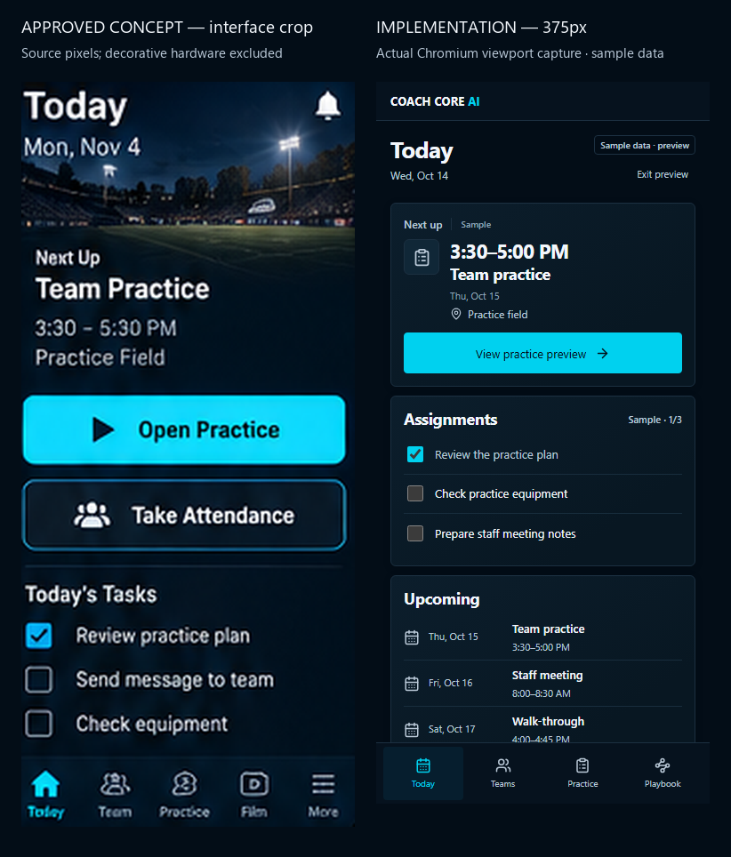
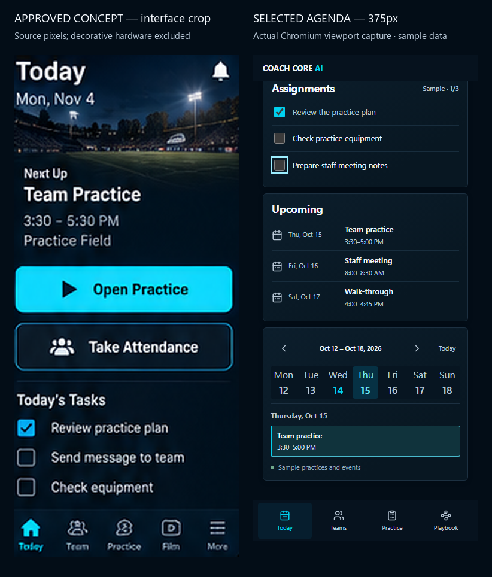
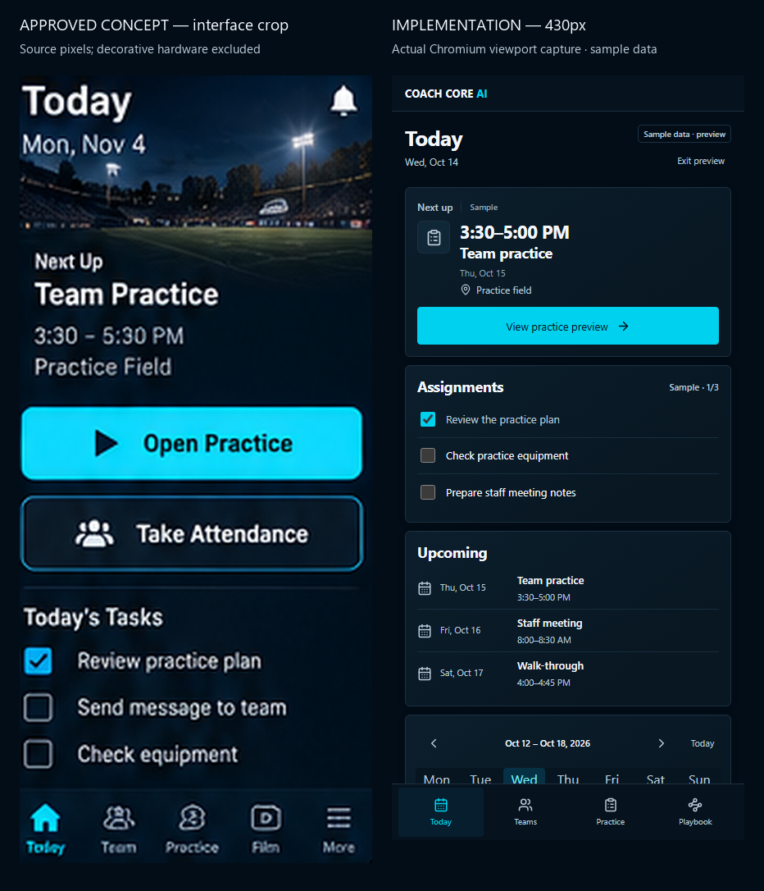
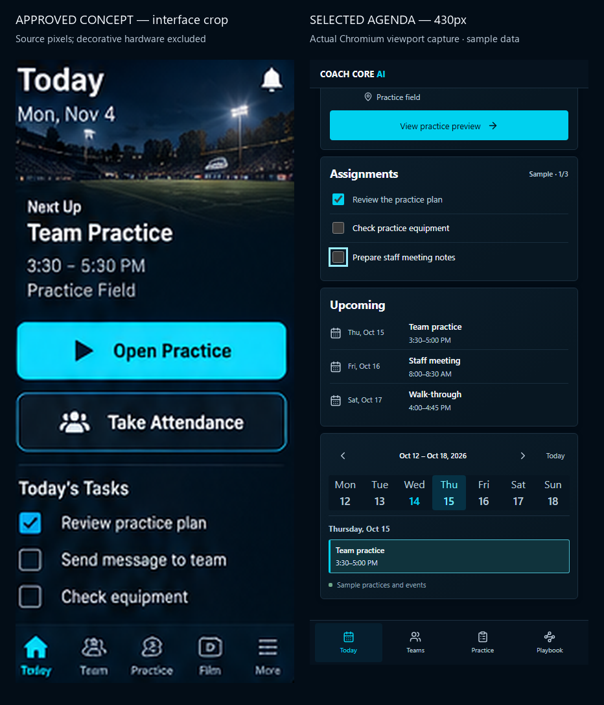
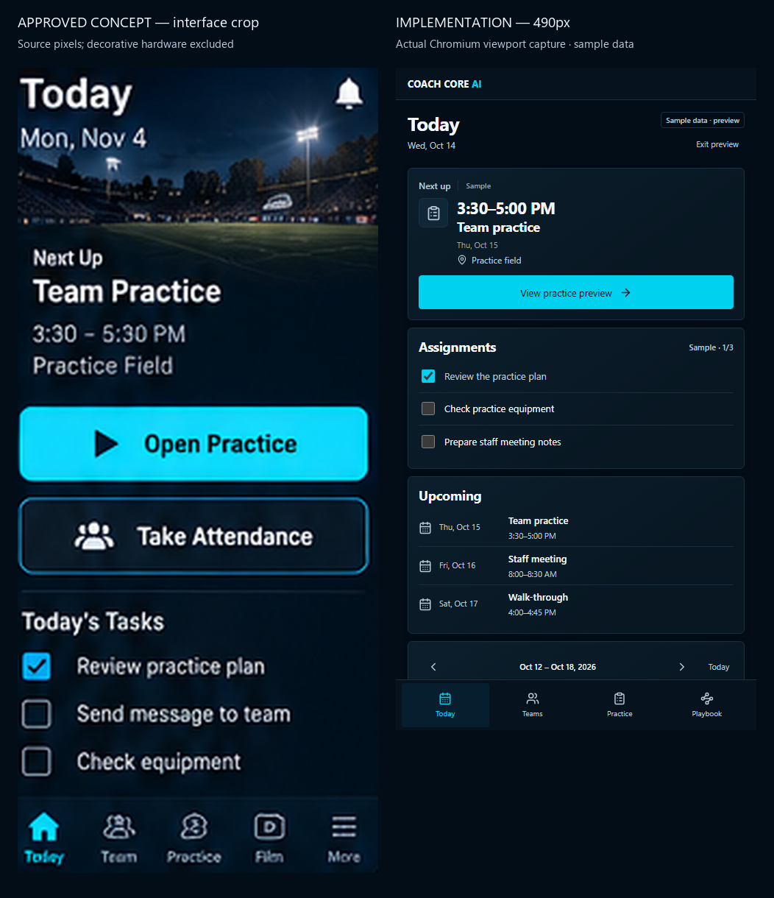
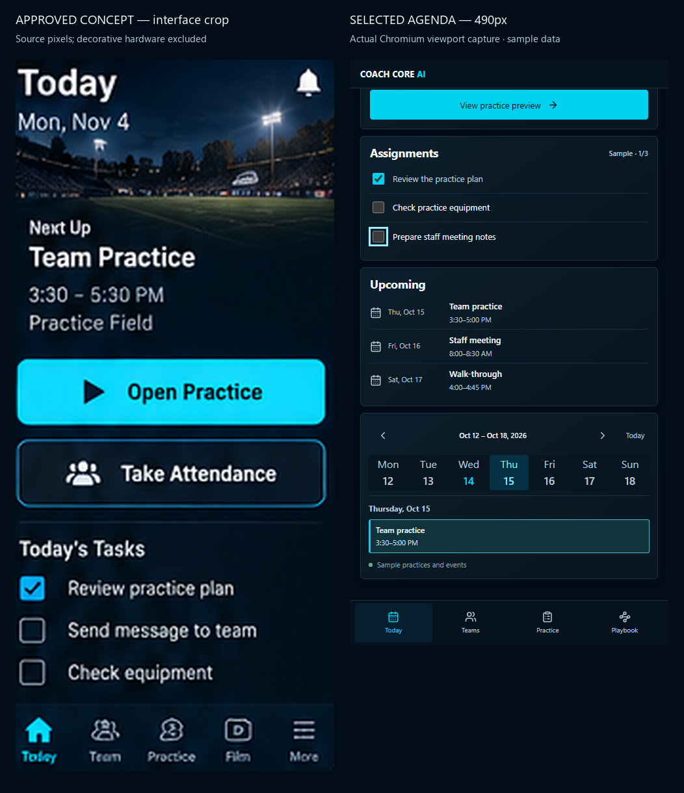
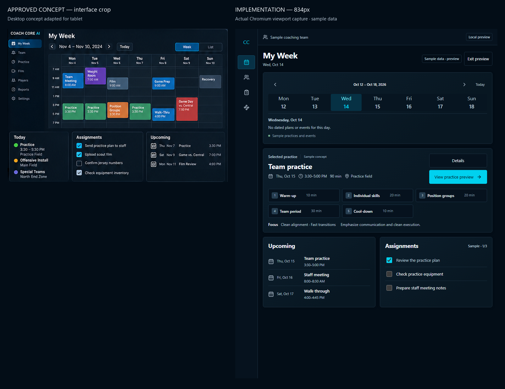
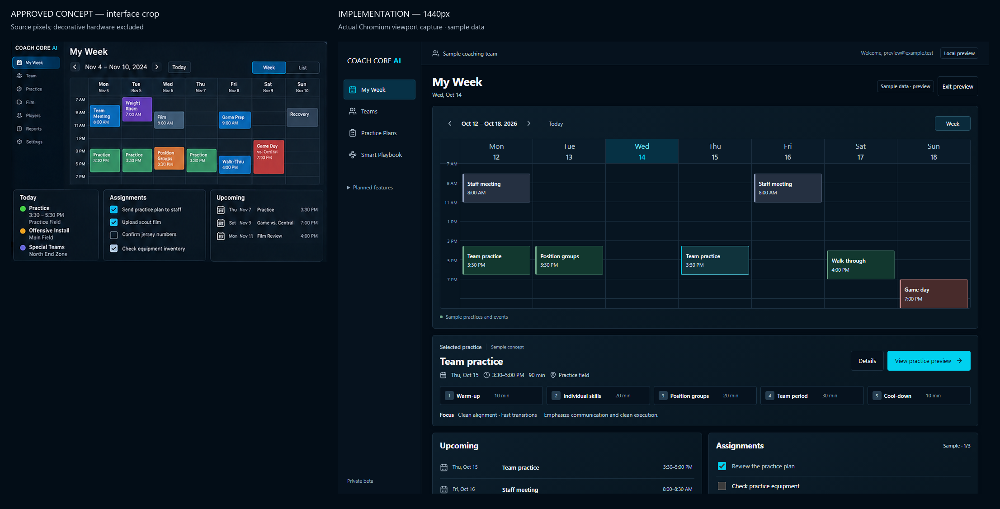

Awaiting Coach Drew’s visual approval. Actual browser screenshots beside supplied concept UI crops.
Changes, intentional differences and verification limits · Local sample preview (reload)

Full page · Honest empty state · Selected agenda and bottom clearance


Full page · Honest empty state · Selected agenda and bottom clearance


Full page · Honest empty state · Selected agenda and bottom clearance



Browser emulation, not physical-device testing. Tablet uses the desktop concept; no separate tablet reference was supplied.